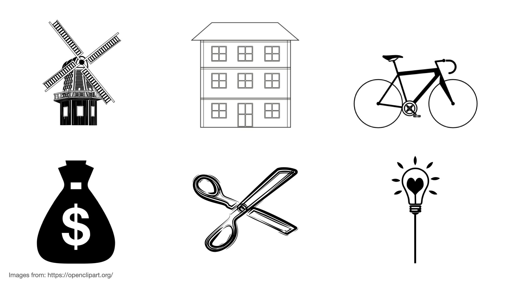
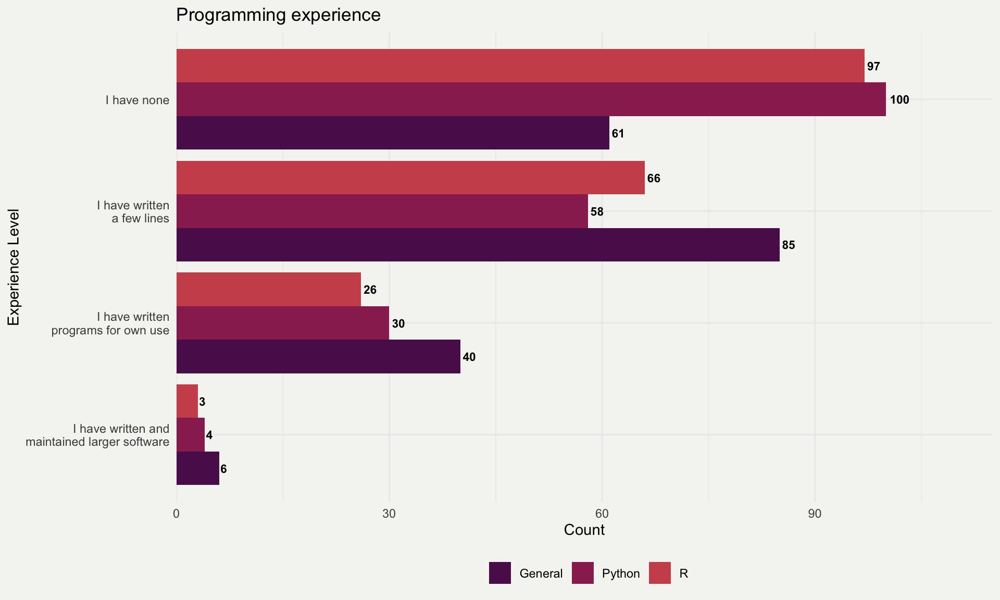

01:00
Welcome & get ready for the course
ds4owd - data science for openwashdata
Email from GitHub?
While we are getting ready, please check for this email from GitHub and accept the invitation to join the GitHub organisation for the course. Used Gmail to sign up? Check the folders that aren’t your primary inbox (e.g Updates).

Welcome! 👋
Meet the team
Adriana Clavijo

- Data Scientist
- Spanish language support
- Technical Support
Nicolò Massari
- Research Software Engineer
- Computational Physicist
- Technical Support
Overall Goals (for the course)
Master data science tools - Use (R, RStudio IDE, Git, GitHub, tidyverse, Quarto) to analyze and communicate data effectively.
Create reproducible documents - Produce professional reports with Quarto, including citations, figures, and tables.
Practice open science - Share your data and code openly, following best practices for reproducibility and collaboration.
Build a portfolio - Complete real-world projects that demonstrate your skills to future employers or collaborators.
Your turn: About you
Pick an item and take notes for 1 minute:
What does the item you have picked have to do with the reason for you being here?

In break-out rooms
Take 1 minute each to share with your room partner:
What does the item you have picked have to do with the reason for you being here?
05:00
Course Calendar
| date | week | topic | module |
|---|---|---|---|
| 11 September 2025 | 1 | Welcome & get ready for the course | module 1 |
| 18 September 2025 | 2 | Data science lifecycle & Exploratory data analysis using visualization | module 2 |
| 25 September 2025 | 3 | Data transformation with dplyr | module 3 |
| 02 October 2025 | 4 | Data import & Data organization in spreadsheets | module 4 |
| 09 October 2025 | 5 | No class | NA |
| 16 October 2025 | 6 | No class | NA |
| 23 October 2025 | 7 | Conditions & Dates & Tables | module 5 |
| 30 October 2025 | 8 | Data types & Vectors & For Loops | module 6 |
| 06 November 2025 | 9 | Pivoting & joining data | module 7 |
| 13 November 2025 | 10 | Creating and publishing scholarly articles with Quarto and GitHub pages | module 8 |
| 20 November 2025 | 11 | Bonus module: Use of AI for coding support | module 9 |
| 27 November 2025 | 12 | Work on Capstone project | NA |
| 04 December 2025 | 13 | Work on Capstone project | NA |
| 11 December 2025 | 14 | Final submission date of Capstone project | NA |
| 18 December 2025 | 15 | Graduation of openwashdata academy | module 10 |
Course structure
- My turn: Lecture segments + live coding
- Our turn: Live coding + follow along
- Your turn: Exercises in break-out rooms
My turn: Lecture segments + live coding
- Instructor writes and narrates code out loud
- Instructor explains concepts and principles that are relevant
- Learners do not join, but rather watch and listen
- Learners are welcome to ask questions in the Zoom chat
Our turn: Live coding + follow along
- Instructor writes and narrates code out loud
- Instructor explains concepts and principles that are relevant
- Ideally, learners display their coding window on a second screen
- Learners join by writing and executing the same code
Your turn: Exercises in break-out rooms
- Two to four learners work together in a break out session
- One person (the driver) shares the screen and does the typing
- The other persons (the navigator) offers comments and suggestions and write on their own
Getting help
During my turn and our turn segments: Please keep your microphone on mute. Send a message to the Zoom chat, Adriana and Nicoló will support you
During your turn segments: Due to the large number of participants, it will not be feasible to join individual break-out rooms, but you will hopefully always be working in groups of 2 to 4 people.
Platforms and Tools
- R
- tidyverse R Packages
- Posit Cloud
- RStudio IDE
- Quarto publishing system
- Element
Course website
Bookmark this page in your browser
Learning Objectives (for this week)
- Learners can access the Posit Cloud workspace for the course.
- Learners can use the Element chat to introduce themselves.
- Learners can open an issue on GitHub and tag the course instructor.
- Learners can clone a repository from GitHub and use the GitHub PAT to push a commit from their local repository to GitHub.

Artwork from @juliesquid for @openscapes (illustrated by @allison_horst)
Posit Cloud
-
-
-
-
-
-
-
Screen setup - Poll
One computer screen 
Two or more computer screens 
Hello Quarto
Meeting you where you are
I’ll assume you
do not have R or git experience
have not worked in an IDE before (e.g. RStudio IDE)
want to learn about R
want to learn about Quarto and publishing
want to learn about project management with GitHub
I’ll teach you
R
Quarto syntax and formats
Markdown
Git via RStudio GUI
GitHub issues, project management, and publishing
Learner profile
Programming experience
190 registrations on pre-course survey.

What is Quarto?
Quarto …
- is a new, open-source, scientific, and technical publishing system
- aims to make the process of creating and collaborating dramatically better

My turn: A tour of Quarto
Sit back and enjoy!
Your turn: Log into Posit Cloud with GitHub account
- Go to the Posit Cloud Sign Up page: login.posit.cloud/register
- Click on the Sign Up with GitHub button.
- Enter your GitHub username and password when prompted.
- Open and accept the workspace invitation (Link is in the Zoom chat now).
- Bookmark the address of the open tab in your browser.
GitHub Authorisation
- If this is your first time logging in to Posit Cloud with your GitHub account, you will be prompted to authorize Posit Cloud to access your GitHub account information.
- Once you have authorized access, you will be redirected back to the Posit Cloud website and logged in to your account.
https://posit.cloud/spaces/663318/join?access_code=8IiLL7Fi5kH6ElaW8G8njVf5kseZab61yqFMpnPu
08:00
Take a break
Please get up and move!

10:00
Photo by Blake Wisz
Your turn: md-01-exercises
- Open posit.cloud/spaces/663318/content in your browser.
- If you are not in the ds4owd-002 workspace, open it.
- Click Start next to md-01-exercises.
- In the File Manager in the bottom right window, locate the
hello-quarto.qmdfile and click on it. - Click the Render button to render the document. You may need to allow pop-ups in your browser.
- In the YAML header, at the
author:key replaceYour Namewith your name. - Render the document again.
- Inspect components of the document and make one more update and re-render.
- Discuss notes about updates you’ve made with your room partners.
10:00
From the comfort of your own workspace


Quarto formats
One install, “Batteries included”
- RMarkdown grew into a large ecosystem, with varying syntax.
. . .
Quarto comes “batteries included” straight out of the box
- HTML reports and websites
- PDF reports
- MS Office (Word, Powerpoint)
- Presentations (Powerpoint, Beamer,
revealjs) - Books
. . .
- Any language, exact same approach and syntax
Many Quarto formats
| Feature | R Markdown | Quarto |
|---|---|---|
| Basic Formats | ||
| Beamer | beamer_presentation | beamer |
| PowerPoint | powerpoint_presentation | pptx |
| HTML Slides | revealjs | |
| Advanced Layout | Quarto Article Layout |
Many Quarto formats
| Feature | R Markdown | Quarto |
|---|---|---|
| Cross References | Quarto Crossrefs | |
| Websites & Blogs | ||
| Books | bookdown | Quarto Books |
| Interactivity | Shiny Documents | Quarto Interactive Documents |
| Journal Articles | rticles | Journal Articles |
| Dashboards | flexdashboard | Quarto Dashboards |
Your turn: Create a new Quarto document
In your md-01-exercises project on Posit Cloud, go to File > New File > Quarto document to create a Quarto document with HTML output.
- Render the document, which will ask you to give it a name: you can use
my-first-document.qmd.
Use the visual editor for the next steps.
Add a title and your name as the author.
Create four sections with headings of level 2 (Introduction, Methods, Results, Conclusions).
Stretch goal: Change the html theme to
sketchy. Tipp: Check quarto.org and use search function with “HTML theming”
15:00
Version Control
Version Control with Git and GitHub
A way to share files with others, so they can:
- download
- re-use
- contribute
You can view the history of files, and jump back in time to any point.
Why is it useful?

Git and GitHub

- Git is a software for version control
- Created in 2005
- Popular among programmers collaboratively developing code
- Tracks changes in a set of files (directory/folder/repository)

GitHub is a hosting platform for version control using Git
Launched in 2008, aquired by Microsoft in 2018 for US$ 7.5 billion
100 million Users (20.5 in 2022 alone) (October, 2023)
Social media for software developers
My turn: A tour of GitHub
Sit back and enjoy!
Your turn: Create an issue on GitHub
- Open github.com in your browser and login with your credentials
- Exchange your GitHub username with your room partner by adding it into the Zoom chat.
- Find and open the md-01-issue repository
- Find the issue tracker (Issues tab) on the top menu bar
- Click on New issue to create a new issue
- Add the title “My first issue on GitHub”
- Add one of your room partners to the list of Assignees on the right panel by clicking on the gear icon and searching their username.
- Add a comment to the issue and tag Adriana @seawaR, Nicoló @massarin, and Lars with @larnsce.
- Click Create to add the new issue.
- Check if you have received a notification about the new issue (Email or Notifications Inbox in the top-right corner on github.com).
- Open the issue you are tagged in and respond to the comment of your room partner.
10:00
Take a break
Please get up and move! Let your emails rest in peace.
10:00
Photo by Blake Wisz
Anatomy of a Quarto document
Components
Metadata: YAML
Text: Markdown
Code: Executed via
knitrorjupyter
. . .
Weave it all together, and you have beautiful, powerful, and useful outputs!
Literate programming
Literate programming is writing out the program logic in a human language with included (separated by a primitive markup) code snippets and macros.
---
title: "ggplot2 demo"
date: "5/23/2023"
format: html
---
## MPG
There is a relationship between city and highway mileage.
```{r}
#| label: fig-mpg
library(ggplot2)
ggplot(mpg, aes(x = cty, y = hwy)) +
geom_point() +
geom_smooth(method = "loess")
```Metadata
YAML
“Yet Another Markup Language” or “YAML Ain’t Markup Language” is used to provide document level metadata.
---
key: value
---Output options
---
format: something
---. . .
---
format: html
------
format: pdf
------
format: revealjs
---Output option arguments
Indentation matters!
---
format:
html:
toc: true
code-fold: true
---YAML validation
- Invalid: No space after
:
---
format:html
---- Invalid: Read as missing
---
format:
html
---YAML validation
There are multiple ways of formatting valid YAML:
- Valid: There’s a space after
:
format: html- Valid:
format: htmlwith selections made with proper indentation
format:
html:
toc: trueR fundamentals
Packages
base R
sqrt(49)
sum(1, 2)- Functions come with R
R Packages
library(dplyr)- Installed once in the Console:
install.packages("dplyr") - Loaded per script
Packages
- Main way that reusable code is shared in R
- Combination of code, data, and documentation
- R has a rich ecosystem of packages for data manipulation & analysis
Functions & Arguments
- Function:
filter() - Argument:
.data = - Arguments following:
year == 2007What do do with the data
Functions & Arguments
- Function:
filter() - Argument:
.data =Does not need to be be spelled out - Arguments following:
year == 2007
Objects
- Function:
filter() - Argument:
.data = - Arguments following:
year == 2007 - Assignment operator:
<-Assigns the result to an object - Object:
gapminder_yr_2007Name of the object that stores result
Operators
- Function:
filter() - Argument:
.data = - Arguments following:
year == 2007 - Object:
gapminder_yr_2007 - Assignment operator:
<- - Pipe operator:
|>Passes the result into the first argument of the next function
Rules
Rules of dplyr functions:
- First argument is always a data frame
- Subsequent arguments say what to do with that data frame
- Always return a data frame
- Don’t modify in place
Does this look and sound foreign and confusing?
These concepts will be repeated many times
We’ll revisit these R fundamentals throughout the next 9 weeks:
- Week by week, we’ll build on these concepts gradually
- Practice will help - you’ll see these patterns repeatedly
- No need to memorize - understanding will come with practice
You’re not expected to remember or fully understand everything right now. This is your first exposure!
Course information
Weekly Structure
| Monday | |
| Tuesday | Office hours on Zoom (2 pm to 3 pm CET) |
| Wednesday | Homework due |
| Thursday | Module from 2 pm to 4:30 pm CET |
| Friday |
Homework assignments
- Weekly assignments (module 1 homework is required for participation)
- Homework assignment due Wednesdays before next module
- Quiz due one week after homework assignment and required for successful completion of the course
- Submitted as rendered Quarto documents on GitHub
- Reviewed by course instructors
- Management and support through GitHub issue tracker
Capstone Project
- Data analysis project report with a dataset of your choice
- Submitted as rendered Quarto document on GitHub
- Submission required for successful completion of the course
Homework assignments module 1
Module 1 documentation
Homework due date
- Homework assignment due: Wednesday, 2025-09-17
- Quiz due: Wednesday, 2025-09-24
Wrap-up
Thanks! 🌻
Slides created via revealjs and Quarto: https://quarto.org/docs/presentations/revealjs/ Access slides as PDF on GitHub
All material is licensed under Creative Commons Attribution Share Alike 4.0 International.